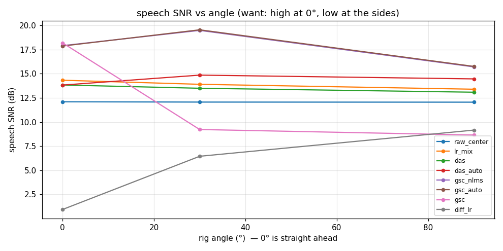
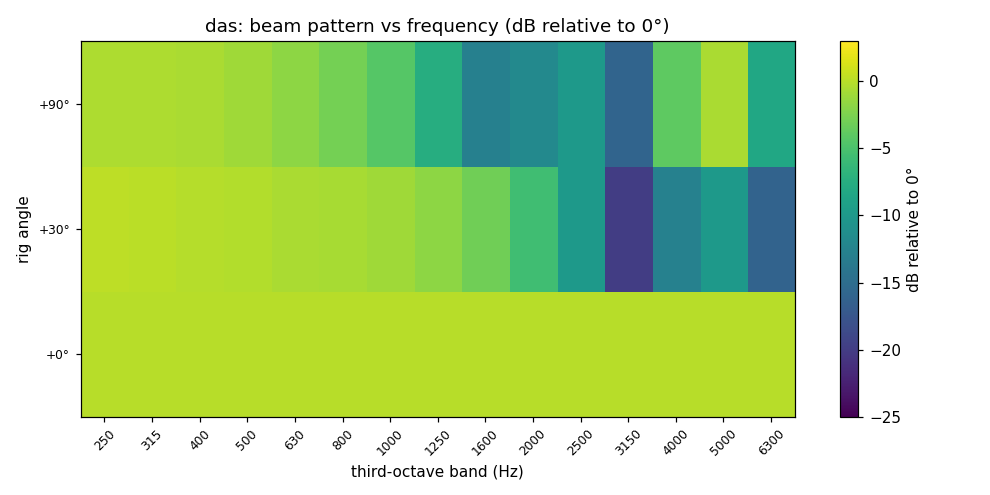
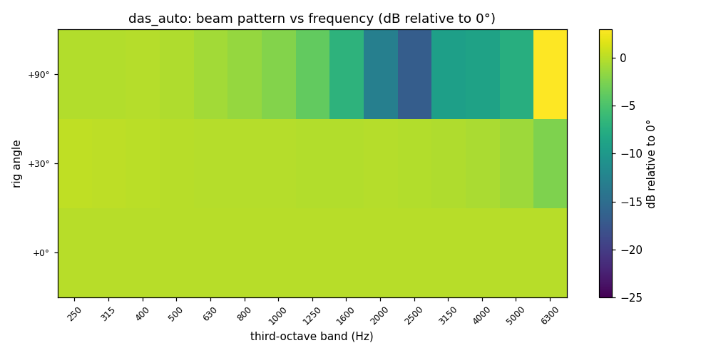
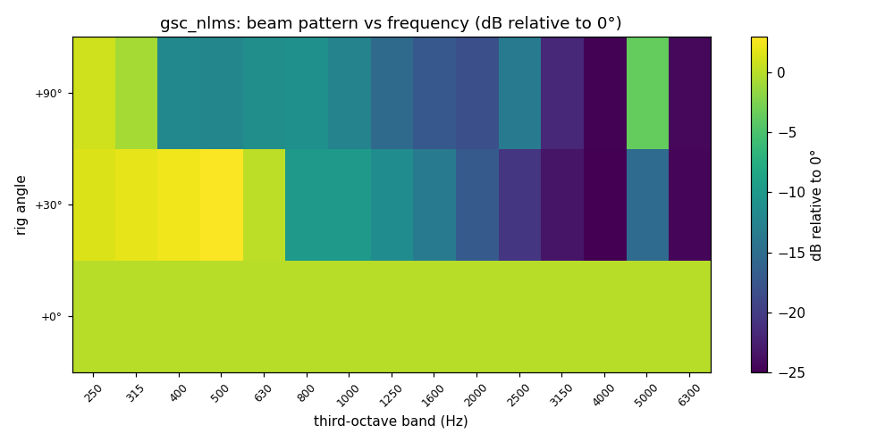
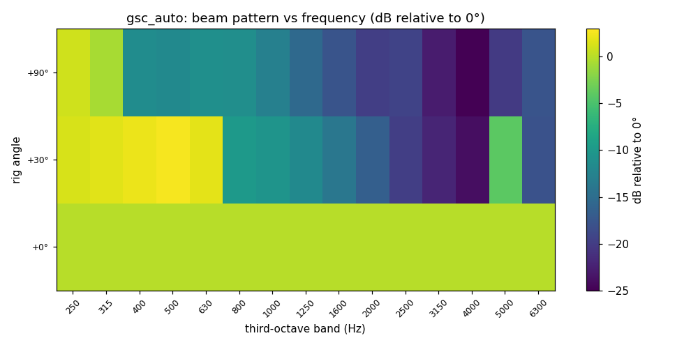
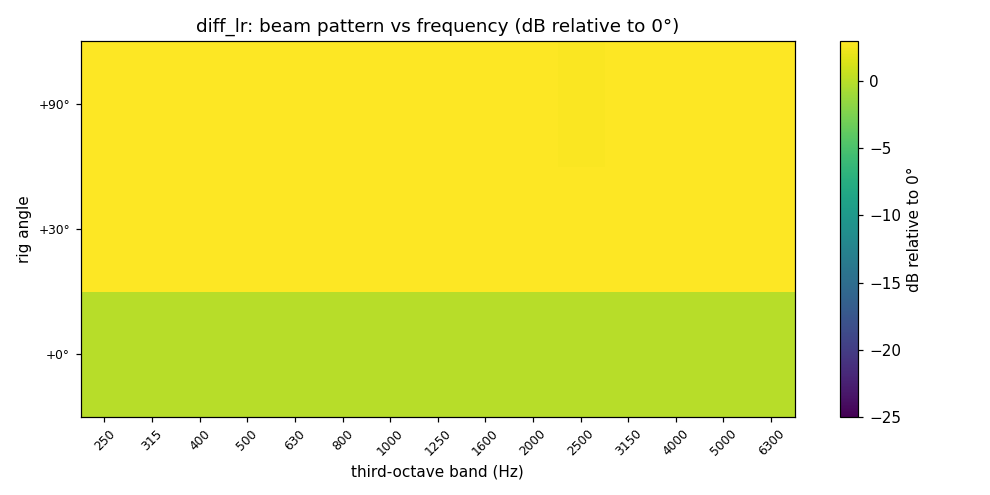

3 tests. Angles: [0, 30, 90]. Distances: [60]. Environments: ['quiet'].
Best so far: gsc (score 10.63). See the scoring notes at the bottom.
| path | score | side_rejection | di_estimate | snr_front | snr_side_mean | front_level | angles |
|---|---|---|---|---|---|---|---|
| gsc | 10.63 | 1.09 | 0.57 | 18.19 | 8.65 | -27.89 | 3 |
| gsc_nlms | 3.31 | 1.11 | 0.59 | 17.9 | 15.7 | -27.86 | 3 |
| gsc_auto | 2.99 | 0.88 | 0.44 | 17.86 | 15.75 | -28.15 | 3 |
| lr_mix | 1.73 | 0.8 | 0.45 | 14.32 | 13.39 | -27.73 | 3 |
| das | 1.69 | 0.94 | 0.53 | 13.83 | 13.08 | -27.71 | 3 |
| das_c1 | 1.3 | 0.61 | 0.29 | 13.82 | 13.13 | -28.0 | 3 |
| das_c2 | 1.03 | 0.46 | 0.19 | 13.87 | 13.3 | -28.16 | 3 |
| raw_center | 0.07 | 0.03 | 0.0 | 12.09 | 12.05 | -27.56 | 3 |
| raw_left | 0.07 | 0.02 | -0.0 | 12.09 | 12.04 | -27.57 | 3 |
| raw_right | 0.06 | 0.03 | 0.01 | 12.09 | 12.06 | -27.56 | 3 |
| das_auto | -0.07 | 0.57 | 0.21 | 13.82 | 14.46 | -28.0 | 3 |
| diff_lr | -15.28 | -7.06 | -5.42 | 0.94 | 9.16 | -41.77 | 3 |











| run | angle | dist | env | heard at | warnings |
|---|---|---|---|---|---|
| 2026-10-27_130144_angle000_distance060cm_quiet | 0 | 60 | quiet | +0° | |
| 2026-10-27_130152_angle030_distance060cm_quiet | 30 | 60 | quiet | +30° | |
| 2026-10-27_130200_angle090_distance060cm_quiet | 90 | 60 | quiet | +84° |
(all dB, computed on the same recordings):
front_level noise level at 0°
side_rejection front level minus the mean level at |angle| >= 45° (higher is better)
di_estimate directivity index from the polar (higher is better)
snr_front speech SNR at 0° (higher is better)
snr_side_mean mean speech SNR at |angle| >= 45° (LOWER is better:
a talker at the side
should not get through)
score side_rejection + (snr_front - snr_side_mean)